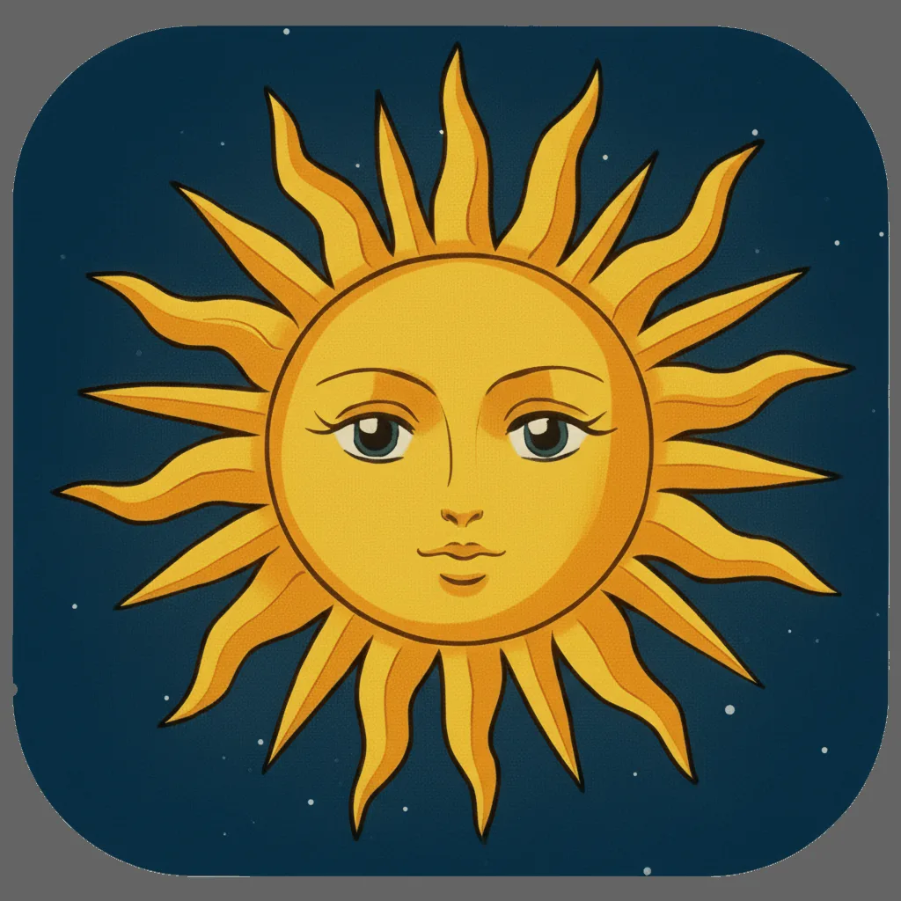

01
Follow the light.
See the sun and moon move across a 3D sky. Check sunrise, sunset, moonrise and moonset for your location.
A Sun in Your Pocket · Sun, moon & sky
Follow the sun and moon, find the light for your next photo and explore the rhythm of the sky. Your personal planetarium on iPhone and iPad. Now available on Apple TV.
Free to download · In-app purchases
iPhone, iPad & Apple TV

Your personal planetarium
01
See the sun and moon move across a 3D sky. Check sunrise, sunset, moonrise and moonset for your location.
02
Plan a photo, a walk or a night outside with golden hour, blue hour, twilight and weather forecasts.
03
Explore lunar phases, eclipses, meteor showers, solstices and equinoxes in the astronomical timeline.
04
Explore solar and lunar paths, stars, planets and constellations in compass mode. Camera and AR features are for iPhone and iPad, not Apple TV.
05
Home screen and lock screen widgets bring the next sunrise, sunset and astronomical events to your iPhone or iPad.
06
Slow down with Zen mode: Earth in space, day and night cycles and a view of the stars.
Inside the app
Real screenshots of the current iPhone version. Scroll through tracking, weather, events and quieter moments.


Coming in version 1.3
In preparation. These changes are not yet part of the currently available App Store version.
Illuminating updates.
It is a sun and moon tracker for iPhone and iPad. Follow their positions and paths, check rise and set times, explore moon phases, and plan around golden hour and astronomical events.
Yes. The app includes sunrise, sunset, moonrise, moonset, twilight phases, golden hour, blue hour, moon phases, eclipses, meteor showers, solstices, and equinoxes.
Your location stays on your device. Solar and lunar calculations run locally, so core tracking works offline. Weather forecasts require an internet connection.
The app is available in English, Spanish, French, German, Italian, Japanese, Korean, Portuguese, and Simplified Chinese.

Weather forecasts need an internet connection.